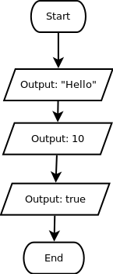

String, Number, dan Boolean
Untuk dilakukan:
-
Tebaklah, tipe data apakah yang cocok untuk data-data berikut (String, Integer, Float/Double, atau Boolean):
- Nilai mahasiswa
- Jumlah pegawai
- Alamat rumah
- Status aktif mahasiswa
- Tweet di twitter
- Jumlah like pada sebuah foto di instagram
- Jarak bumi ke matahari
- Status kelulusan siswa
- Tekan kategori Input/Output dan Values, amati blok-blok yang terdapat pada kedua kategori tersebut
- Modifikasi blok-blok program di panel lembar kerja agar bisa menampilkan kata "Hello", angka 10, dan nilai boolean true (perhatikan flowchart)
- Catat bagaimana perbedaan cara untuk menampilkan ketiga data tersebut dalam bahasa Javascript
- Sebelum menekan tombol evaluate, bukalah website jdoodle, lalu buatlah sebuah program untuk menampilkan NRP, nama, dan umurmu (3 baris output) tanpa menggunakan goblock
- Tekan tombol evaluate
